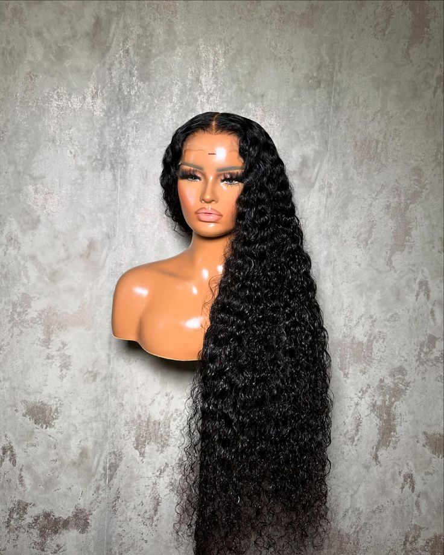
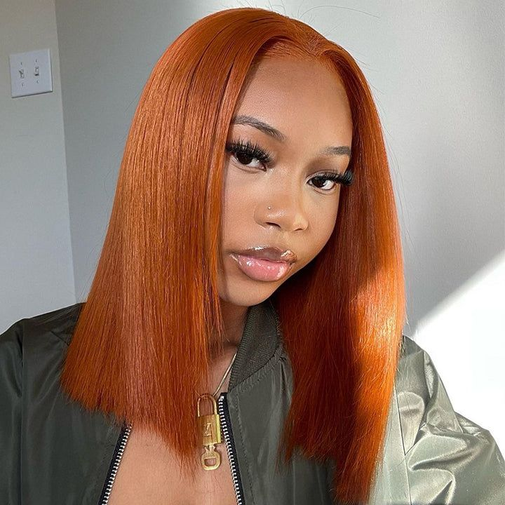
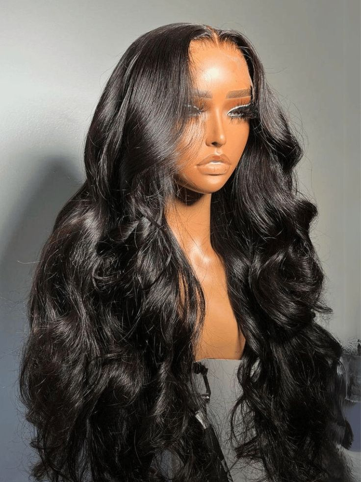

staceysWigs.com
Experience
Unique Experience: Wigs.com delivers a distinctive online shopping experience, setting us apart in the industry. We offer the finest wig brands and hair styles, backed by our experts' recommendations to ensure you get the best.
Expertise You Can Trust: Our Wig Expert team boasts unparalleled knowledge in human hair and synthetic wigs and hair toppers, whether you're new or long-time wearer.
Tailored Excellence: Expect the highest quality products, comprehensive education, trucolor charts, and exceptional customer service, all personalized to your needs
Decades of Dedication: With over 25 years in the beauty and hair business, we're your trusted source for wigs, hairpieces, hair toppers, and extensions.
Customer Friendly Returns: We make returning simple with 45 Days from ship date, $0 restocking fees, speedy refunds, and prepaid shipping labels (or use your own).




ABOUT OUR CEO
stacey Sotelo Moore is the CEO and co-founder of staceysWigs,
an online retailer of wigs and hair products: Education
Moore has an international business degree from the University of Texas at San Antonio. Company history
Moore started staceysWigs in 1999 in her spare bedroom. The company has since grown to include other sites, such as Hairextensions.com and Hairpieces.com.
Company mission Wigs.com's mission is to provide high-quality products and expertise in the alternative hair industry.